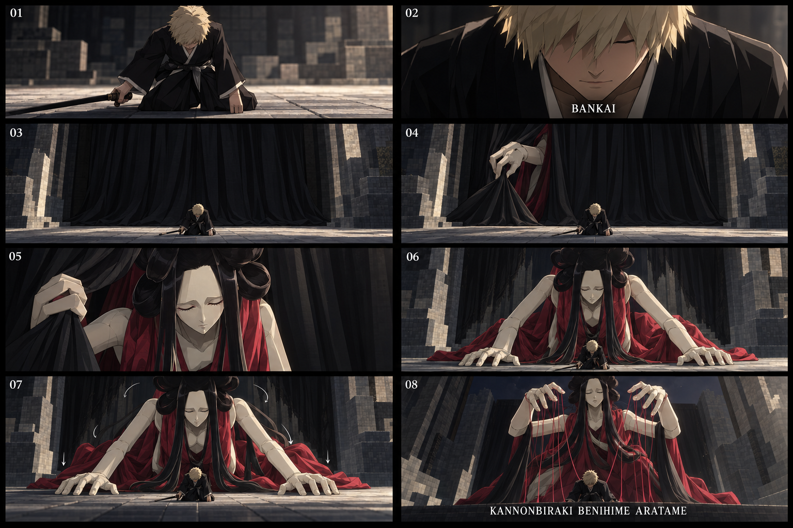

BLEACH / ESTUDO VISUAL 65 / 19 OUT 2026
Benihime — da cortina à postura dos fios
Roteiro do jogador: close frontal, ajoelhar e katana baixa, “Bankai”, recuo, cortina negra, primeira mão, rosto, corpo inteiro, pausa com as mãos no chão, elevação do tronco e nome completo.
Somente storyboard e prévia autoral. Nenhuma alteração no mod. Zaraki preservado. Vozes e som entram depois.
0,0 / 22,0 s
Escolha um trecho ou reproduza a sequência completa.
22 segundos para avaliar os gestos e a pausa de quase três segundos no chão. Esta duração de estudo não altera a duração de três segundos nem o marco de ativação da build atual. A decisão de duração jogável vem depois da revisão visual.
Storyboard e direção de aparência

Storyboard ilustrado: direção de composição, atmosfera e acabamento. Não é captura do Minecraft nem modelo final instalado.
Movimento que precisamos preservar
- A mão abre o tecido antes de o rosto surgir.
- O corpo atravessa a cortina; não cresce inteiro como uma estátua.
- Mãos no chão: pausa de 12,6 a 15,5 s.
- Tronco sobe, depois cotovelos, punhos e dedos assumem os fios.
- Jogador pequeno e visível no centro dos planos abertos.
Próxima autoria para o jogo
- Modelo e animações articuladas da manifestação, em pipeline compatível com GeckoLib 4.
- PlayerAnimator para ajoelhar, katana e recuperação do jogador.
- Cortina em faixas deformáveis, com pregas ligadas ao toque da mão.
- Cabelo e vestes com movimento secundário, sem exigir física pesada.
- Câmera exclusiva da Benihime e marcos de sincronismo; Photon opcional para detalhes.
Arquivos para revisão
MP4 · 960 × 540 · 24 fps · sem áudio GIF animado Roteiro detalhado